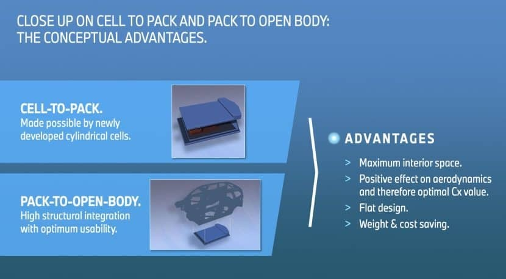
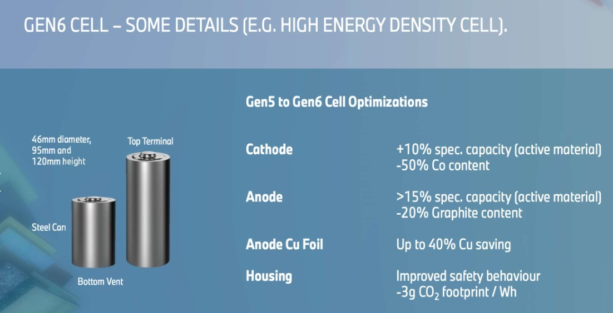
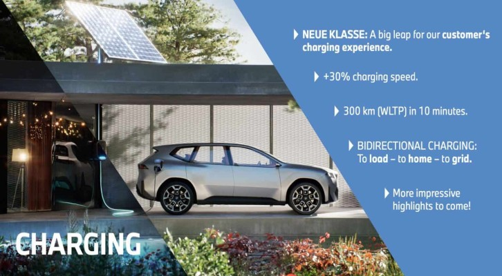
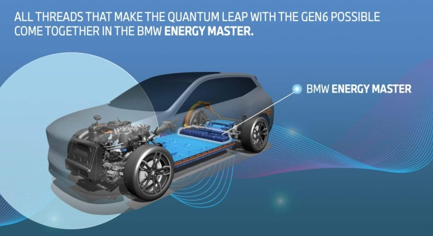
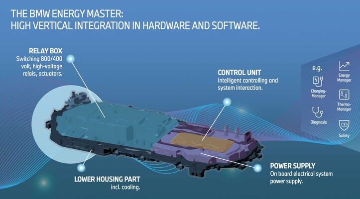
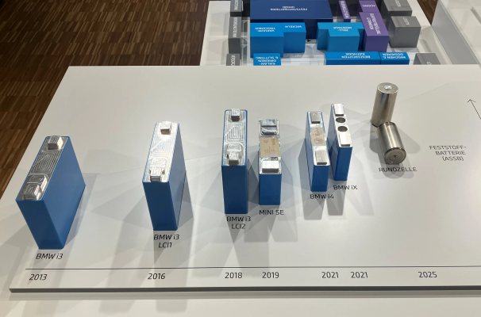
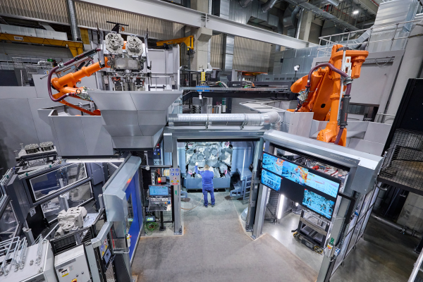

On February 21st, the automotive world witnessed the unveiling of the BMW Group's sixth-generation eDrive electric drive technology, headlined by a groundbreaking large cylindrical battery. This new battery format, distinguished by its innovative structural design, enhanced energy density, and superior charging efficiency, positions itself as a significant advancement over current mainstream offerings, including Tesla 's 4680 cylindrical battery, BYD EUROPE 's blade battery, and CATL's prevalent square cell format.
Through a combination of clever engineering and material science breakthroughs, BMW has presented a compelling vision for the future of electric vehicle powertrains. This article will delve into the core advantages of BMW's Gen6 battery technology and explore its potential ramifications, particularly within the burgeoning electric vehicle market of India.
1. Structural Design and Integration: Redefining Space Efficiency
BMW's approach to battery pack design in their Gen6 eDrive system marks a departure from conventional modular architectures, prioritizing space utilization and vehicle dynamics:
1.1. "Cell to Pack" and "Pack to Open Body" Integration:
BMW has embraced a "Cell to Pack" (CTP) strategy, directly integrating large cylindrical battery cells (46mm diameter, with height variations of 95mm and 120mm) into the battery pack, eliminating the intermediary module layer. This module-free design is further enhanced by a "Pack to Open Body" concept, deeply integrating the battery pack with the vehicle's chassis structure. This holistic integration yields significant benefits, reducing the approximately 30% of redundant space typically occupied by traditional battery modules. Consequently, the thickness of the battery pack is reduced by 15%, the vehicle's center of gravity is lowered by 10% (enhancing handling and stability), and overall space utilization within the vehicle is increased by an impressive 20%.

Comparison: While Tesla's 4680 battery also employs a "Cell to Chassis" (CTC) approach, the level of integration between the battery pack and the body structure in BMW's solution appears to be more advanced, resulting in superior space efficiency. This difference could translate to more spacious interiors or the ability to accommodate larger battery capacities within similar vehicle dimensions.
1.2. Optimized Cooling System:
BMW has implemented a sophisticated serpentine water cooling topology. This design ensures that the cooling pipes have a contact area exceeding 95% with the surface of the battery cells, leading to highly effective temperature control with a minimal temperature difference of within ±2°C across the battery pack. Precise thermal management is crucial for maintaining battery performance, longevity, and safety.
Comparison: BYD's blade battery cooling system relies on a sandwich-like structure. While effective to a degree, the long and thin nature of the blade cells presents a greater challenge in achieving uniform cooling compared to BMW's direct and extensive contact approach with cylindrical cells. Consistent temperature control is particularly vital in markets with high ambient temperatures, such as India, where battery performance and lifespan can be significantly impacted by thermal stress.
2. Materials and Electrochemical Properties: Pushing the Boundaries of Energy Density and Efficiency
BMW's Gen6 battery showcases significant advancements in the fundamental materials and electrochemical processes within the cells:
2.1. High Nickel Cathode and Silicon-Based Anode:
The positive electrode (cathode) utilizes a high nickel content, exceeding 90%, while simultaneously reducing the cobalt content by 50%. This shift in chemistry is crucial for achieving higher energy density and reducing reliance on a more resource-constrained material. The negative electrode (anode) incorporates 10% silicon-based materials as a dopant. Silicon has a significantly higher theoretical lithium storage capacity compared to traditional graphite, contributing to a substantial energy density of 300Wh/kg for the BMW cell. This represents a 20% increase over the estimated energy density of Tesla's 4680 battery (around 270Wh/kg).

Furthermore, BMW employs pre-lithiation technology. This process compensates for the irreversible lithium loss that typically occurs during the battery's first charge cycle, leading to improved initial capacity and contributing to a long cycle life of up to 2,000 cycles with a capacity retention rate exceeding 80%. This robust cycle life is essential for the long-term viability and consumer acceptance of electric vehicles.
2.2. Low Viscosity Electrolyte and Vacuum Injection:
BMW utilizes an electrolyte with reduced viscosity, achieved through the addition of fluoroethylene carbonate (FEC). This lower viscosity facilitates faster lithium-ion transport within the cell, contributing to improved charging and discharging performance. This is coupled with a bell-shaped vacuum injection process, which ensures a pore filling rate exceeding 99% within the large cylindrical cells. Achieving thorough wetting of the electrode materials by the electrolyte is critical for optimal performance and longevity, especially in larger cell formats.
3. Charging and Thermal Management: Enabling Ultra-Fast Charging and Enhanced Safety
BMW's Gen6 eDrive system places a strong emphasis on rapid charging capabilities and comprehensive thermal management for enhanced safety and user convenience:
3.1. 800V High Voltage Platform and Ultra-Fast Charging:
The adoption of an 800V high-voltage platform is a key enabler for ultra-fast charging. BMW claims that their system can add 300 kilometers of driving range with just 10 minutes of charging, representing a 30% improvement in charging efficiency compared to lower voltage systems.

Comparison: Tesla's Supercharger (V4) network can add approximately 200 kilometers of range in 15 minutes. BYD's Blade Battery, operating on a 600V platform, typically has a slower charging speed compared to 800V systems. The ability to rapidly replenish driving range is a significant factor in overcoming range anxiety and increasing the practicality of EVs, particularly in a market like India, where charging infrastructure is still developing.
3.2. Intelligent Thermal Management System:
BMW's EnergyMaster system provides real-time monitoring of the battery's status, enabling millisecond-level fault isolation and precise temperature control. The system undergoes an impressive 151 safety test items, significantly exceeding the industry average of around 15. This comprehensive approach to safety testing and proactive thermal management is crucial for ensuring the reliability and safety of high-performance EV batteries.

4. Market Positioning and Ecosystem Synergy: A Global Vision with Local Commitment
BMW's strategy extends beyond technological innovation to encompass market positioning and supply chain integration:
4.1. Multi-Motor Configurations and Driving Performance:
The Gen6 eDrive system offers flexibility with single-motor to quad-motor configurations. It combines an excitation synchronous motor (ESM) on the rear axle with an asynchronous motor (ASM) on the front axle in dual-motor setups. This hybrid approach reportedly reduces energy loss by 40% and increases overall vehicle efficiency by 20%. Furthermore, the ESM outperforms permanent magnet motor solutions (commonly used by Tesla) at high speeds, avoiding the risk of demagnetization and maintaining efficiency. This focus on driving performance and efficiency will be crucial in attracting discerning EV buyers.

Comparison: Tesla primarily utilizes single permanent magnet motors, which can experience efficiency drops at higher speeds due to potential demagnetization.
4.2. Deep Integration of the Supply Chain:
BMW is strategically collaborating with major battery cell manufacturers like CATL and EVE Energy Co.,Ltd. , with cumulative investments exceeding RMB 14 billion in China. This partnership aims to localize the entire value chain, from battery cell research and development to production and recycling, with mass production slated to begin at their Shenyang base in 2026. This strong supply chain integration will be vital for cost competitiveness and ensuring a stable supply of battery cells for their future EV models.
The Indian EV Market: A Landscape Ripe for Innovation
The Indian electric vehicle market is currently experiencing a period of rapid growth and transformation. While still a relatively small segment compared to the overall automotive market, the Indian government's push for electrification, coupled with increasing consumer awareness and the entry of new players, is creating significant momentum. The market is characterized by a diverse range of vehicles, from affordable two-wheelers and three-wheelers to premium SUVs.
Currently, the Indian EV market sees a mix of battery technologies. Local manufacturers often rely on more cost-effective solutions, while premium brands are introducing vehicles with advanced battery systems. The charging infrastructure is still in its nascent stages, with a mix of slow and fast chargers being deployed across urban centers. Range anxiety remains a significant concern for potential buyers, and the demand for longer-range vehicles with faster charging capabilities is growing.

BMW's Gen6 eDrive Battery and its Potential Impact on India:
The introduction of BMW's Gen6 eDrive technology, with its impressive specifications, holds significant potential for the Indian EV market:
- Addressing Range Anxiety: The high energy density of the Gen6 battery (300Wh/kg) could enable BMW to offer vehicles with significantly longer real-world driving ranges, directly addressing a key concern for Indian consumers.
- Faster Charging for Convenience: The 800V platform and ultra-fast charging capabilities would be a major advantage, allowing for quicker top-ups and reducing charging times, making EVs more practical for daily use and long-distance travel, as infrastructure develops.
- Enhanced Safety in Demanding Conditions: The robust thermal management system and stringent safety testing protocols would be particularly beneficial in India's hot climate, ensuring battery performance and safety under challenging operating conditions.
- Premium Positioning and Technology Leadership: BMW's technological prowess with the Gen6 battery would further solidify its position as a premium EV manufacturer in India, attracting early adopters and tech-savvy consumers.
- Potential for Local Manufacturing: While initial imports are likely, BMW's global strategy of localizing battery production could eventually extend to India, potentially leading to more competitive pricing and a stronger local supply chain over the long term.

Challenges and Considerations for India:
Despite the clear advantages, the widespread adoption of BMW's Gen6-equipped vehicles in India will also depend on several factors:
- Charging Infrastructure Development: The availability of high-voltage fast-charging infrastructure is crucial to fully leverage the ultra-fast charging capabilities of the 800V platform. Significant investment in this area will be necessary.
- Pricing and Affordability: As a premium brand, BMW's EVs are likely to be positioned at the higher end of the market. The cost competitiveness of their Gen6-equipped vehicles will play a key role in their market penetration.
- Local Competition: The Indian EV market is becoming increasingly competitive, with both established players and new entrants focusing on localized manufacturing and competitive pricing. BMW will need to differentiate itself through its technology and brand value.
- Consumer Awareness and Education: Educating consumers about the benefits of advanced battery technology, such as higher energy density and faster charging, will be important for driving adoption.
Summary: A Technological Leap with Global Implications
BMW's sixth-generation eDrive technology, spearheaded by its innovative large cylindrical battery, represents a significant step forward in electric vehicle powertrain technology. By addressing the "impossible triangle" of high energy density, fast charging performance, and safety through structural innovation, material advancements, and precision manufacturing, BMW has created a compelling offering that surpasses current mainstream battery solutions.
As mass production commences in 2026, this technology has the potential to influence the industry towards larger cylindrical cell standardization and reshape the competitive landscape of power batteries globally. Its impact on the Indian EV market, while subject to local infrastructure development and pricing strategies, could be substantial, offering longer-range, faster-charging, and safer electric vehicles to discerning consumers and further accelerating the electrification journey in this rapidly growing market.